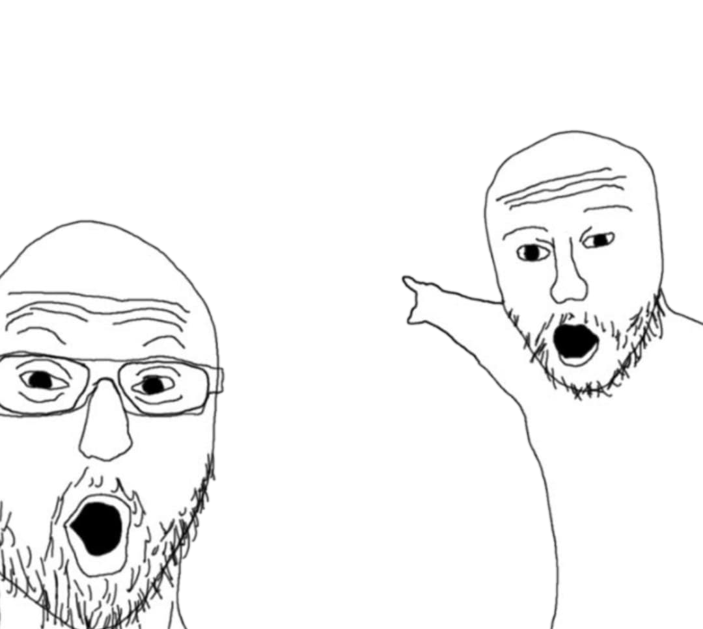

Remind Page
div는 한줄로 먼저 채워진다. em,rem의 차이는? viewpoint 까지
점메추 : style에서 어떤 내용이 먼저 적용될까? id가 이길까 class가 이길까 ?
margin? padding? 우리의 예상을 빗나가게하는 녀석들 ps. 큰놈은 다이겨
border? padding? 박스가 100일줄 알았더니 아니었던 것 content-box는 정직해
폰트와 float에 대한 스피드런..진도가 너무빨라요 살려주세요
float left로 겹쳐지면 clear를 이용해보자
힘겹게 쓰고도 아직 이해못한걸 더 공부하러 가야하는 Chillguy